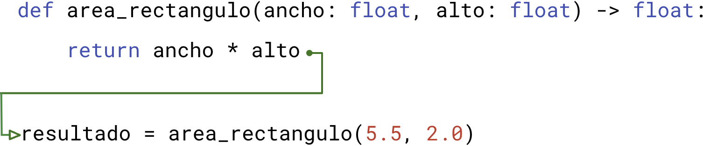

<!DOCTYPE html>
<html lang="en">
  <head>
    <meta charset="utf-8" />
    <meta name="viewport" content="width=device-width, initial-scale=1.0, maximum-scale=1.0, user-scalable=no" />

    <title></title>
    <link rel="stylesheet" href="dist/reveal.css" />
    <link rel="stylesheet" href="dist/theme/iph.css" id="theme" />
    <link rel="stylesheet" href="plugin/highlight/spyder.css" />
	<link rel="stylesheet" href="css/layout.css" />
	<link rel="stylesheet" href="plugin/customcontrols/style.css">


    <script defer src="dist/fontawesome/all.min.js"></script>

	<script type="text/javascript">
		var forgetPop = true;
		function onPopState(event) {
			if(forgetPop){
				forgetPop = false;
			} else {
				parent.postMessage(event.target.location.href, "app://obsidian.md");
			}
        }
		window.onpopstate = onPopState;
		window.onmessage = event => {
			if(event.data == "reload"){
				window.document.location.reload();
			}
			forgetPop = true;
		}

		function fitElements(){
			const itemsToFit = document.getElementsByClassName('fitText');
			for (const item in itemsToFit) {
				if (Object.hasOwnProperty.call(itemsToFit, item)) {
					var element = itemsToFit[item];
					fitElement(element,1, 1000);
					element.classList.remove('fitText');
				}
			}
		}

		function fitElement(element, start, end){

			let size = (end + start) / 2;
			element.style.fontSize = `${size}px`;

			if(Math.abs(start - end) < 1){
				while(element.scrollHeight > element.offsetHeight){
					size--;
					element.style.fontSize = `${size}px`;
				}
				return;
			}

			if(element.scrollHeight > element.offsetHeight){
				fitElement(element, start, size);
			} else {
				fitElement(element, size, end);
			}		
		}


		document.onreadystatechange = () => {
			fitElements();
			if (document.readyState === 'complete') {
				if (window.location.href.indexOf("?export") != -1){
					parent.postMessage(event.target.location.href, "app://obsidian.md");
				}
				if (window.location.href.indexOf("print-pdf") != -1){
					let stateCheck = setInterval(() => {
						clearInterval(stateCheck);
						window.print();
					}, 250);
				}
			}
	};


        </script>
  </head>
  <body>
    <div class="reveal">
      <div class="slides"><section  data-markdown><script type="text/template"><!-- .slide: class="has-light-background drop" data-background-color="#f8f8f8" -->
<div class="" style="position: absolute; left: 0px; top: 0px; height: 700px; width: 960px; min-height: 700px; display: flex; flex-direction: column; align-items: center; justify-content: center" absolute="true">

### <i class="fas fa-award"></i> IP Honores

 ####  *Funciones III*

[Eduardo Rosales](mailto:ee.rosales24@uniandes.edu.co)

Departamento de Ingeniería de Sistemas y Computación

Universidad de los Andes
</div></script></section><section  data-markdown><script type="text/template"><!-- .slide: class="has-light-background drop" data-background-color="#f8f8f8" -->
<div class="" style="position: absolute; left: 0px; top: 0px; height: 700px; width: 960px; min-height: 700px; display: flex; flex-direction: column; align-items: center; justify-content: center" absolute="true">

### Función (definición actualizada)

- **Bloque de código** reutilizable y con nombre
	- Diseñado para una **tarea específica**
	- Puede recibir datos de entrada
	- Puede retornar una salida (resultado)
		- Ej: Un promedio
	- O puede producir un efecto 
		- Ej: Reproducir una canción
</div></script></section><section  data-markdown><script type="text/template"><!-- .slide: class="has-light-background drop" data-background-color="#f8f8f8" -->
<div class="" style="position: absolute; left: 0px; top: 0px; height: 700px; width: 960px; min-height: 700px; display: flex; flex-direction: column; align-items: center; justify-content: center" absolute="true">

### Quiz I

```python
def suma(primer_operando: int, segundo_operando: int) -> int:
    return primer_operando + segundo_operando
```
- ¿Para qué  sirve la palabra clave `def`? 
	- &shy;<!-- .element: class="fragment" data-fragment-index="1" -->Para declarar una función
	
- ¿Cuál es el nombre de la función?
	- &shy;<!-- .element: class="fragment" data-fragment-index="2" -->`suma`
</div></script></section><section  data-markdown><script type="text/template"><!-- .slide: class="has-light-background drop" data-background-color="#f8f8f8" -->
<div class="" style="position: absolute; left: 0px; top: 0px; height: 700px; width: 960px; min-height: 700px; display: flex; flex-direction: column; align-items: center; justify-content: center" absolute="true">

### Quiz II

```python
def suma(primer_operando: int, segundo_operando: int) -> int:
    return primer_operando + segundo_operando
```
	
- ¿Cuántos parámetros tiene la función?
	- &shy;<!-- .element: class="fragment" data-fragment-index="1" -->2
	
- ¿De qué tipo son los parámetros tiene la función?
	- &shy;<!-- .element: class="fragment" data-fragment-index="2" -->Ambos son `int`
</div></script></section><section  data-markdown><script type="text/template"><!-- .slide: class="has-light-background drop" data-background-color="#f8f8f8" -->
<div class="" style="position: absolute; left: 0px; top: 0px; height: 700px; width: 960px; min-height: 700px; display: flex; flex-direction: column; align-items: center; justify-content: center" absolute="true">

### Quiz III

```python
def suma(primer_operando: int, segundo_operando: int) -> int:
    return primer_operando + segundo_operando
```
- ¿Cuántas líneas tiene el cuerpo de la función?
	- &shy;<!-- .element: class="fragment" data-fragment-index="1" -->Una
	
- ¿Qué hace el cuerpo de la función?
	- &shy;<!-- .element: class="fragment" data-fragment-index="2" -->Suma aritméticamente a: `primer_operando` y  `segundo_operando`
		- &shy;<!-- .element: class="fragment" data-fragment-index="3" -->Y retorna el resultado
</div></script></section><section  data-markdown><script type="text/template"><!-- .slide: class="has-light-background drop" data-background-color="#f8f8f8" -->
<div class="" style="position: absolute; left: 0px; top: 0px; height: 700px; width: 960px; min-height: 700px; display: flex; flex-direction: column; align-items: center; justify-content: center" absolute="true">

### La instrucción `return` (1/2)

- Palabra clave que  finaliza una función y retorna
- Permite que una función 
	- Retorne un resultado al código que la invocó
- Sintaxis:
```
return expresion
```
- `expresion` (opcional): Una expresión que evalúe a un valor
</div></script></section><section  data-markdown><script type="text/template"><!-- .slide: class="has-light-background drop" data-background-color="#f8f8f8" -->
<div class="" style="position: absolute; left: 0px; top: 0px; height: 700px; width: 960px; min-height: 700px; display: flex; flex-direction: column; align-items: center; justify-content: center" absolute="true">

### La instrucción `return` (2/2)

- Si no se usa una expresión
```
return
```
	- Se retorna `None`

<br>

- Si la función no define la instrucción `return`
```python
def imprimir_hola(): -> None
       print("Hola")
```
	- Se retorna `None`
</div></script></section><section  data-markdown><script type="text/template"><!-- .slide: class="has-light-background drop" data-background-color="#f8f8f8" -->
<div class="" style="position: absolute; left: 0px; top: 0px; height: 700px; width: 960px; min-height: 700px; display: flex; flex-direction: column; align-items: center; justify-content: center" absolute="true">

### `None`
    
- Palabra clave que representa la ausencia de valor o **valor nulo**
- En Python, `None` es una constante
	- **Constante (repaso)**: 
		- Tipo de variable cuyo valor no está destinado a cambiar 
			- Después de ser declarado
    
- `None` es el valor retornado implícitamente 
	- Si la función no retorna explícitamente otro valor
</div></script></section><section  data-markdown><script type="text/template"><!-- .slide: class="has-light-background drop" data-background-color="#f8f8f8" -->
<div class="" style="position: absolute; left: 0px; top: 0px; height: 700px; width: 960px; min-height: 700px; display: flex; flex-direction: column; align-items: center; justify-content: center" absolute="true">

### Retorno explícito vs.  retorno implícito (1/4)

- Salvo que explícitamente se indique lo contrario
	- En Python una función
		- **Retorna  `None` por defecto**
</div></script></section><section  data-markdown><script type="text/template"><!-- .slide: class="has-light-background drop" data-background-color="#f8f8f8" -->
<div class="" style="position: absolute; left: 0px; top: 0px; height: 700px; width: 960px; min-height: 700px; display: flex; flex-direction: column; align-items: center; justify-content: center" absolute="true">

### Retorno explícito vs.  retorno implícito (3/4)

- **Retorno explícito**:
	- Se usa explícitamente `return` para retornar:

 - Como ejemplo aquí se retorna un `float`:
 
```python
def multiplicacion(primer_operando: float, segundo_operando: float) -> float:
    return primer_operando * segundo_operando
```
</div></script></section><section  data-markdown><script type="text/template"><!-- .slide: class="has-light-background drop" data-background-color="#f8f8f8" -->
<div class="" style="position: absolute; left: 0px; top: 0px; height: 700px; width: 960px; min-height: 700px; display: flex; flex-direction: column; align-items: center; justify-content: center" absolute="true">

### Retorno explícito vs.  retorno implícito (3/4)

-  **Retorno implícito**:
	- No hay `return` 
		- Por defecto, retorna  **`None`**

	<br>

 - Como ejemplo aquí se retorna `None`:
```python
def print_nombre(nombre:str) -> None:
    print(nombre)
```
</div></script></section><section  data-markdown><script type="text/template"><!-- .slide: class="has-light-background drop" data-background-color="#f8f8f8" -->
<div class="" style="position: absolute; left: 0px; top: 0px; height: 700px; width: 960px; min-height: 700px; display: flex; flex-direction: column; align-items: center; justify-content: center" absolute="true">

### Retorno explícito vs.  retorno implícito (4/4)

-  **Retorno implícito**:
	- Hay `return`  pero no se define explícitamente qué retornar
		- Por defecto, retorna  **`None`**


	<br>


- Como ejemplo aquí se retorna `None`:
```python
def ejemplo() -> None:
    return
```
</div></script></section><section  data-markdown><script type="text/template"><!-- .slide: class="has-light-background drop" data-background-color="#f8f8f8" -->
<div class="" style="position: absolute; left: 0px; top: 0px; height: 700px; width: 960px; min-height: 700px; display: flex; flex-direction: column; align-items: center; justify-content: center" absolute="true">

### Quiz IV

```python
def resta(primer_operando: int, segundo_operando: int) -> int:
    return primer_operando - segundo_operando
```

- ¿La función tiene un retorno explícito o implícito?
	- &shy;<!-- .element: class="fragment" data-fragment-index="1" -->Explícito

- ¿Qué retorna la función?
	- &shy;<!-- .element: class="fragment" data-fragment-index="2" -->La resta aritmética  de: `primer_operando` y  `segundo_operando`
	
- ¿Cuál es el tipo de retorno de la función?
	- &shy;<!-- .element: class="fragment" data-fragment-index="3" -->`int`
</div></script></section><section  data-markdown><script type="text/template"><!-- .slide: class="has-light-background drop" data-background-color="#f8f8f8" -->
<div class="" style="position: absolute; left: 0px; top: 0px; height: 700px; width: 960px; min-height: 700px; display: flex; flex-direction: column; align-items: center; justify-content: center" absolute="true">

### Quiz V

```python
def print_nombre(nombre:str) -> None:
    print(nombre)
```

- ¿La función tiene un retorno explícito o implícito?
	- &shy;<!-- .element: class="fragment" data-fragment-index="1" -->Implícito

- ¿Qué retorna la función?
	- &shy;<!-- .element: class="fragment" data-fragment-index="2" -->`None`
	
- ¿Cuál es el tipo de retorno de la función?
	- &shy;<!-- .element: class="fragment" data-fragment-index="3" -->`None`
</div></script></section><section  data-markdown><script type="text/template"><!-- .slide: class="has-light-background drop" data-background-color="#f8f8f8" -->
<div class="" style="position: absolute; left: 0px; top: 0px; height: 700px; width: 960px; min-height: 700px; display: flex; flex-direction: column; align-items: center; justify-content: center" absolute="true">

### Quiz VI

```python
def no_hace_nada() -> None:
    return
```

- ¿La función tiene un retorno explícito o implícito?
	- &shy;<!-- .element: class="fragment" data-fragment-index="1" -->Explícito
		- &shy;<!-- .element: class="fragment" data-fragment-index="2" -->Porque se usa `return`

- ¿Qué retorna la función?
	- &shy;<!-- .element: class="fragment" data-fragment-index="3" -->`None`
		- &shy;<!-- .element: class="fragment" data-fragment-index="4" -->Porque no se especifica explícitamente qué retornar
	
- ¿Cuál es el tipo de retorno de la función?
	- &shy;<!-- .element: class="fragment" data-fragment-index="5" -->`None`
</div></script></section><section  data-markdown><script type="text/template"><!-- .slide: class="has-light-background drop" data-background-color="#f8f8f8" -->
<div class="" style="position: absolute; left: 0px; top: 0px; height: 700px; width: 960px; min-height: 700px; display: flex; flex-direction: column; align-items: center; justify-content: center" absolute="true">

### Quiz VII

```python
def div_entera(primer_operando: int, segundo_operando: int) -> int:
    return primer_operando // segundo_operando
```

¿Cuál es el resultado de la siguiente instrucción?
```python
div_entera(9, 2)
```
- &shy;<!-- .element: class="fragment" data-fragment-index="1" -->4
</div></script></section><section  data-markdown><script type="text/template"><!-- .slide: class="has-light-background drop" data-background-color="#f8f8f8" -->
<div class="" style="position: absolute; left: 0px; top: 0px; height: 700px; width: 960px; min-height: 700px; display: flex; flex-direction: column; align-items: center; justify-content: center" absolute="true">

### Comprendamos un poco más la ejecución de una función
</div></script></section><section  data-markdown><script type="text/template"><!-- .slide: class="has-light-background drop" data-background-color="#f8f8f8" -->
<div class="" style="position: absolute; left: 0px; top: 0px; height: 700px; width: 960px; min-height: 700px; display: flex; flex-direction: column; align-items: center; justify-content: center" absolute="true">

### Ejecución de la función (1/7)

- ¿Cuál es el propósito de la siguiente función?

```python
def area_rectangulo(ancho: float, alto: float) -> float:
    return ancho * alto
```
- &shy;<!-- .element: class="fragment" data-fragment-index="1" -->Calcula el área de un rectángulo
</div></script></section><section  data-markdown><script type="text/template"><!-- .slide: class="has-light-background drop" data-background-color="#f8f8f8" -->
<div class="" style="position: absolute; left: 0px; top: 0px; height: 700px; width: 960px; min-height: 700px; display: flex; flex-direction: column; align-items: center; justify-content: center" absolute="true">

### Ejecución de la función (2/7)

- Al invocar correctamente a una función
	- Esta se ejecutará
		- Los argumentos serán el valor de los parámetros
			- El cuerpo de la función se ejecutará

```python
def area_rectangulo(ancho: float, alto: float) -> float:
    # Al invocarse la función:
      # `ancho` será igual a 5.5
      # `alto` será igual a 2.0
    return ancho * alto  # Retorna 11.0
```

```python
area_rectangulo(5.5, 2.0)
```
</div></script></section><section  data-markdown><script type="text/template"><!-- .slide: class="has-light-background drop" data-background-color="#f8f8f8" -->
<div class="" style="position: absolute; left: 0px; top: 0px; height: 700px; width: 960px; min-height: 700px; display: flex; flex-direction: column; align-items: center; justify-content: center" absolute="true">

### Ejecución de la función (3/7)

- Conceptualmente, invocar se puede ver así:


- `area_rectangulo(5.5, 2.0)` invoca a la función `area_rectangulo()`
	- Los argumentos usados son `5.5`, `2.0`
		- El orden importa
</div></script></section><section  data-markdown><script type="text/template"><!-- .slide: class="has-light-background drop" data-background-color="#f8f8f8" -->
<div class="" style="position: absolute; left: 0px; top: 0px; height: 700px; width: 960px; min-height: 700px; display: flex; flex-direction: column; align-items: center; justify-content: center" absolute="true">

### Ejecución de la función (4/7)


- Se dice que el *control de flujo* del programa
	- _Salta_ a la definición de la función
</div></script></section><section  data-markdown><script type="text/template"><!-- .slide: class="has-light-background drop" data-background-color="#f8f8f8" -->
<div class="" style="position: absolute; left: 0px; top: 0px; height: 700px; width: 960px; min-height: 700px; display: flex; flex-direction: column; align-items: center; justify-content: center" absolute="true">

### Ejecución de la función (5/7)

- ¿Cuál será el valor asignado a `resultado`?

```python
def area_rectangulo(ancho: float, alto: float) -> float:
    return ancho * alto  # Retorna 11.0
```
```python
resultado = area_rectangulo(5.5, 2.0)
```
- &shy;<!-- .element: class="fragment" data-fragment-index="1" -->`resultado` será igual a `11.0`
</div></script></section><section  data-markdown><script type="text/template"><!-- .slide: class="has-light-background drop" data-background-color="#f8f8f8" -->
<div class="" style="position: absolute; left: 0px; top: 0px; height: 700px; width: 960px; min-height: 700px; display: flex; flex-direction: column; align-items: center; justify-content: center" absolute="true">

### Ejecución de la función (6/7)

- Conceptualmente, retornar se puede ver así:




- El cuerpo de la función  se ejecuta:
	- La función `area_rectangulo()` retorna
		- El valor de retorno (`11.0`) se asigna a `resultado`
			- `resultado` será igual a `11.0`
</div></script></section><section  data-markdown><script type="text/template"><!-- .slide: class="has-light-background drop" data-background-color="#f8f8f8" -->
<div class="" style="position: absolute; left: 0px; top: 0px; height: 700px; width: 960px; min-height: 700px; display: flex; flex-direction: column; align-items: center; justify-content: center" absolute="true">

### Ejecución de la función (7/7)


- Se dice que el *control de flujo* del programa
	- Se _retorna_ al punto de invocación de la función
</div></script></section><section  data-markdown><script type="text/template"><!-- .slide: class="has-light-background drop" data-background-color="#f8f8f8" -->
<div class="" style="position: absolute; left: 0px; top: 0px; height: 700px; width: 960px; min-height: 700px; display: flex; flex-direction: column; align-items: center; justify-content: center" absolute="true">

### ¿Qué responsabilidades tiene una función?
</div></script></section><section  data-markdown><script type="text/template"><!-- .slide: class="has-light-background drop" data-background-color="#f8f8f8" -->
<div class="" style="position: absolute; left: 0px; top: 0px; height: 700px; width: 960px; min-height: 700px; display: flex; flex-direction: column; align-items: center; justify-content: center" absolute="true">

### Principio de Responsabilidad Única (Single Responsibility Principle) - SRP (1/3)
- **"Una función debe tener una, y solo una, razón para cambiar"**
	-  Una función debe tener un **único propósito**
	-  Si una función tiene dos propósitos
		- Es una indicación
			- De que se debe distribuir 
				- En dos o más funciones
</div></script></section><section  data-markdown><script type="text/template"><!-- .slide: class="has-light-background drop" data-background-color="#f8f8f8" -->
<div class="" style="position: absolute; left: 0px; top: 0px; height: 700px; width: 960px; min-height: 700px; display: flex; flex-direction: column; align-items: center; justify-content: center" absolute="true">

### Principio de Responsabilidad Única (Single Responsibility Principle) - SRP (2/3)
- Ventajas del SRP:
	- Mejora la modularidad/encapsulamiento
	- Hace el código más fácil 
		- De entender y mantener
	- Fomenta la reutilización del código
	- Simplifica cambios futuros
	- Facilita las pruebas y la depuración
</div></script></section><section  data-markdown><script type="text/template"><!-- .slide: class="has-light-background drop" data-background-color="#f8f8f8" -->
<div class="" style="position: absolute; left: 0px; top: 0px; height: 700px; width: 960px; min-height: 700px; display: flex; flex-direction: column; align-items: center; justify-content: center" absolute="true">

### Principio de Responsabilidad Única (Single Responsibility Principle) - SRP (3/3)

- Al aplicar el SRP
	- Cada función se responsabiliza 
		- De una **parte específica** del problema
			- Mejora la modularidad


</div></script></section><section  data-markdown><script type="text/template"><!-- .slide: class="has-light-background drop" data-background-color="#f8f8f8" -->
<div class="" style="position: absolute; left: 0px; top: 0px; height: 700px; width: 960px; min-height: 700px; display: flex; flex-direction: column; align-items: center; justify-content: center" absolute="true">

### Mala práctica que viola el SRP

``` Python
def calcular_area_y_perimetro_rectangulo(ancho: float, alto: float) -> ?:
    area = ancho * alto
    perimetro = 2 * (ancho + alto)
    return ?  # ¿Qué retornar?
```

- ❌  Esta función tiene dos propósitos
	- ❌  Tiene dos razones para cambiar
</div></script></section><section  data-markdown><script type="text/template"><!-- .slide: class="has-light-background drop" data-background-color="#f8f8f8" -->
<div class="" style="position: absolute; left: 0px; top: 0px; height: 700px; width: 960px; min-height: 700px; display: flex; flex-direction: column; align-items: center; justify-content: center" absolute="true">

### Práctica que se alinea con  el SRP

``` Python
	def calcular_area_rectangulo(ancho: float, alto: float) -> float:
	    return ancho * alto
```

<br>

``` Python
def calcular_perimetro_rectangulo(ancho: float, alto: float) -> float:
    return 2 * (ancho + alto)
```

<br>

 ✅ Cada función tiene un propósito único
</div></script></section><section  data-markdown><script type="text/template"><!-- .slide: class="has-light-background drop" data-background-color="#f8f8f8" -->
<div class="" style="position: absolute; left: 0px; top: 0px; height: 700px; width: 960px; min-height: 700px; display: flex; flex-direction: column; align-items: center; justify-content: center" absolute="true">

### Composición de funciones (repaso)

 - Ejecutar múltiples funciones en secuencia

- La salida de una función → Entrada de otra función
  - Todo en una sola línea

- Los tipos deben ser compatibles entre funciones

- El orden de la composición es clave
</div></script></section><section  data-markdown><script type="text/template"><!-- .slide: class="has-light-background drop" data-background-color="#f8f8f8" -->
<div class="" style="position: absolute; left: 0px; top: 0px; height: 700px; width: 960px; min-height: 700px; display: flex; flex-direction: column; align-items: center; justify-content: center" absolute="true">

### Ejemplo de composición de funciones (1/4)

- ¿Cuál es el propósito de cada función?

```python
def calcular_area_cuadrado(lado: float) -> float:
    return lado * lado

def calcular_area_triangulo(base: float, altura: float) -> float:
    return (base * altura) / 2

def calcular_area_total(lado_cuadrado: float, base_triangulo: float, altura_triangulo: float) -> float:
    area_cuadrado = calcular_area_cuadrado(lado_cuadrado)
    area_triangulo = calcular_area_triangulo(base_triangulo, altura_triangulo)
    return area_cuadrado + area_triangulo

print(calcular_area_total(4.0, 4.0, 4.0))  # → 24.0
```

- &shy;<!-- .element: class="fragment" data-fragment-index="1" -->`calcular_area_cuadrado()`
	- Retorna el área de un cuadrado dado su lado
- &shy;<!-- .element: class="fragment" data-fragment-index="2" -->`calcular_area_triangulo()`: 
	- Retorna el área de un triángulo dada su base y altura
- &shy;<!-- .element: class="fragment" data-fragment-index="3" -->`calcular_area_total()`: 
	- Retorna la suma del área de un cuadrado y un triángulo
</div></script></section><section  data-markdown><script type="text/template"><!-- .slide: class="has-light-background drop" data-background-color="#f8f8f8" -->
<div class="" style="position: absolute; left: 0px; top: 0px; height: 700px; width: 960px; min-height: 700px; display: flex; flex-direction: column; align-items: center; justify-content: center" absolute="true">

### Ejemplo de composición de funciones (2/4)

```python[1,12]
def calcular_area_cuadrado(lado: float) -> float:
    return lado * lado

def calcular_area_triangulo(base: float, altura: float) -> float:
    return (base * altura) / 2

def calcular_area_total(
	lado_cuadrado: float, 
	base_triangulo: float, 
	altura_triangulo: float) -> float:
	
    area_cuadrado = calcular_area_cuadrado(lado_cuadrado)
    area_triangulo = calcular_area_triangulo(base_triangulo, altura_triangulo)
    return area_cuadrado + area_triangulo

print(calcular_area_total(4.0, 4.0, 4.0))  # → 24.0
```

- La función `calcular_area_total()`
	- Invoca a la función `calcular_area_cuadrado()`
</div></script></section><section  data-markdown><script type="text/template"><!-- .slide: class="has-light-background drop" data-background-color="#f8f8f8" -->
<div class="" style="position: absolute; left: 0px; top: 0px; height: 700px; width: 960px; min-height: 700px; display: flex; flex-direction: column; align-items: center; justify-content: center" absolute="true">

### Ejemplo de composición de funciones (3/4)

```python[4,13]
def calcular_area_cuadrado(lado: float) -> float:
    return lado * lado

def calcular_area_triangulo(base: float, altura: float) -> float:
    return (base * altura) / 2

def calcular_area_total(
	lado_cuadrado: float, 
	base_triangulo: float, 
	altura_triangulo: float) -> float:
	
    area_cuadrado = calcular_area_cuadrado(lado_cuadrado)
    area_triangulo = calcular_area_triangulo(base_triangulo, altura_triangulo)
    return area_cuadrado + area_triangulo

print(calcular_area_total(4.0, 4.0, 4.0))  # → 24.0
```

- La función `calcular_area_total()`
	- Invoca también a la función `calcular_area_triangulo()`
</div></script></section><section  data-markdown><script type="text/template"><!-- .slide: class="has-light-background drop" data-background-color="#f8f8f8" -->
<div class="" style="position: absolute; left: 0px; top: 0px; height: 700px; width: 960px; min-height: 700px; display: flex; flex-direction: column; align-items: center; justify-content: center" absolute="true">

### Ejemplo de composición de funciones (4/4)

- La composición evita la duplicación de código
	- El código en `calcular_area_cuadrado()` y `calcular_area_triangulo()`
		- Se definen una sola vez y se pueden usar muchas veces
	- La función `calcular_area_total()`
		- **No duplica código que ya existe en otras funciones**
</div></script></section><section  data-markdown><script type="text/template"><!-- .slide: class="has-light-background drop" data-background-color="#f8f8f8" -->
<div class="" style="position: absolute; left: 0px; top: 0px; height: 700px; width: 960px; min-height: 700px; display: flex; flex-direction: column; align-items: center; justify-content: center" absolute="true">

# Variables locales
</div></script></section><section  data-markdown><script type="text/template"><!-- .slide: class="has-light-background drop" data-background-color="#f8f8f8" -->
<div class="" style="position: absolute; left: 0px; top: 0px; height: 700px; width: 960px; min-height: 700px; display: flex; flex-direction: column; align-items: center; justify-content: center" absolute="true">

### Variable local

- Variable definida dentro de una función​
- **Alcance**:
	- La variable está confinada a la función​
		- Se vuelve inaccesible por fuera de la función​
</div></script></section><section  data-markdown><script type="text/template"><!-- .slide: class="has-light-background drop" data-background-color="#f8f8f8" -->
<div class="" style="position: absolute; left: 0px; top: 0px; height: 700px; width: 960px; min-height: 700px; display: flex; flex-direction: column; align-items: center; justify-content: center" absolute="true">

###  Variable local - Ejemplo (1/6)

- ¿Cuál es el propósito de la siguiente función?

```python
def volumen_cilindro(radio_base: float, altura: float) -> float:
    PI = 3.1416
    area_base = PI * radio_base * radio_base
    return area_base * altura
```
- &shy;<!-- .element: class="fragment" data-fragment-index="1" -->Calcula el volumen de un cilindro dado su radio y altura
</div></script></section><section  data-markdown><script type="text/template"><!-- .slide: class="has-light-background drop" data-background-color="#f8f8f8" -->
<div class="" style="position: absolute; left: 0px; top: 0px; height: 700px; width: 960px; min-height: 700px; display: flex; flex-direction: column; align-items: center; justify-content: center" absolute="true">

###  Variable local - Ejemplo (2/6)

- ¿Qué es `PI`?

```python[2]
def volumen_cilindro(radio_base: float, altura: float) -> float:
    PI = 3.1416
    area_base = PI * radio_base * radio_base
    return area_base * altura
```
- &shy;<!-- .element: class="fragment" data-fragment-index="1" -->Es una constante
	- &shy;<!-- .element: class="fragment" data-fragment-index="2" -->Una variable cuyo valor no se espera cambiar
</div></script></section><section  data-markdown><script type="text/template"><!-- .slide: class="has-light-background drop" data-background-color="#f8f8f8" -->
<div class="" style="position: absolute; left: 0px; top: 0px; height: 700px; width: 960px; min-height: 700px; display: flex; flex-direction: column; align-items: center; justify-content: center" absolute="true">

###  Variable local - Ejemplo (3/6)

```python[2]
def volumen_cilindro(radio_base: float, altura: float) -> float:
    PI = 3.1416
    area_base = PI * radio_base * radio_base
    return area_base * altura
```

- La constante `PI` es una **variable local**
	- Está contenida en la función `volumen_cilindro()`
</div></script></section><section  data-markdown><script type="text/template"><!-- .slide: class="has-light-background drop" data-background-color="#f8f8f8" -->
<div class="" style="position: absolute; left: 0px; top: 0px; height: 700px; width: 960px; min-height: 700px; display: flex; flex-direction: column; align-items: center; justify-content: center" absolute="true">

###  Variable local - Ejemplo (4/6)

```python
def volumen_cilindro(radio_base: float, altura: float) -> float:
    PI = 3.1416
    area_base = PI * radio_base * radio_base
    return area_base * altura
```

- `PI` 
	- Solo existe adentro de la función `volumen_cilindro()`
		- **NO se puede usar**
			- Por fuera de esta función
</div></script></section><section  data-markdown><script type="text/template"><!-- .slide: class="has-light-background drop" data-background-color="#f8f8f8" -->
<div class="" style="position: absolute; left: 0px; top: 0px; height: 700px; width: 960px; min-height: 700px; display: flex; flex-direction: column; align-items: center; justify-content: center" absolute="true">

###  Variable local - Ejemplo (5/6)

```python[3]
def volumen_cilindro(radio_base: float, altura: float) -> float:
    PI = 3.1416
    area_base = PI * radio_base * radio_base
    return area_base * altura
```

-  `area_base` es una variable local 
	- Está contenida en la función `volumen_cilindro()`
</div></script></section><section  data-markdown><script type="text/template"><!-- .slide: class="has-light-background drop" data-background-color="#f8f8f8" -->
<div class="" style="position: absolute; left: 0px; top: 0px; height: 700px; width: 960px; min-height: 700px; display: flex; flex-direction: column; align-items: center; justify-content: center" absolute="true">

###  Variable local - Ejemplo (6/6)

```python
def volumen_cilindro(radio_base: float, altura: float) -> float:
    PI = 3.1416
    area_base = PI * radio_base * radio_base
    return area_base * altura
```

- `area_base` 
	- Solo existe adentro de la función `volumen_cilindro()`
		- **NO se puede usar**
			- Por fuera de esta función
</div></script></section><section  data-markdown><script type="text/template"><!-- .slide: class="has-light-background drop" data-background-color="#f8f8f8" -->
<div class="" style="position: absolute; left: 0px; top: 0px; height: 700px; width: 960px; min-height: 700px; display: flex; flex-direction: column; align-items: center; justify-content: center" absolute="true">

### Quiz VIII

```python
def calcular_area_total(
	lado_cuadrado: float, 
	base_triangulo: float, 
	altura_triangulo: float) -> float:
	
    area_cuadrado = calcular_area_cuadrado(lado_cuadrado)
    area_triangulo = calcular_area_triangulo(base_triangulo, altura_triangulo)
    return area_cuadrado + area_triangulo
```

- ¿Cuáles son variables locales en la función `calcular_area_total`?
	- &shy;<!-- .element: class="fragment" data-fragment-index="1" -->`area_cuadrado` y
	- &shy;<!-- .element: class="fragment" data-fragment-index="2" -->`area_triangulo`
</div></script></section><section  data-markdown><script type="text/template"><!-- .slide: class="has-light-background drop" data-background-color="#f8f8f8" -->
<div class="" style="position: absolute; left: 0px; top: 0px; height: 700px; width: 960px; min-height: 700px; display: flex; flex-direction: column; align-items: center; justify-content: center" absolute="true">

### Quiz IX

- ¿Cuál sería el resultado de ejecutar el siguiente código?

```python
def calcular_area_total(
	lado_cuadrado: float, 
	base_triangulo: float, 
	altura_triangulo: float) -> float:
	
    area_cuadrado = calcular_area_cuadrado(lado_cuadrado)
    area_triangulo = calcular_area_triangulo(base_triangulo, altura_triangulo)
    return area_cuadrado + area_triangulo

calcular_area_total(4.0, 4.0, 4.0)
print(area_triangulo)
```
</div></script></section><section  data-markdown><script type="text/template"><!-- .slide: class="has-light-background drop" data-background-color="#f8f8f8" -->
<div class="" style="position: absolute; left: 0px; top: 0px; height: 700px; width: 960px; min-height: 700px; display: flex; flex-direction: column; align-items: center; justify-content: center" absolute="true">

### Quiz IX - Solución

```plaintext
Traceback (most recent call last):
    ...
    
    print(area_triangulo)

NameError: name 'area_triangulo' is not defined
```

- Se obtiene un [NameError](https://eerosales24.github.io/iph_2025_10/general/errores_comunes/#/7)
	- `area_triangulo` es una variable local
		- No existe por fuera de la función que la define
</div></script></section><section  data-markdown><script type="text/template"><!-- .slide: class="has-light-background drop" data-background-color="#f8f8f8" -->
<div class="" style="position: absolute; left: 0px; top: 0px; height: 700px; width: 960px; min-height: 700px; display: flex; flex-direction: column; align-items: center; justify-content: center" absolute="true">

## Documentación de funciones (1/2)

- Explican el propósito de la función [(PEP 257)](https://peps.python.org/pep-0257/)
    
- La documentación se encierra en comillas triples 
	- `"""`
	- Por esa razón a la documentación en Python
		- También se le conoce como **`docstring`**
</div></script></section><section  data-markdown><script type="text/template"><!-- .slide: class="has-light-background drop" data-background-color="#f8f8f8" -->
<div class="" style="position: absolute; left: 0px; top: 0px; height: 700px; width: 960px; min-height: 700px; display: flex; flex-direction: column; align-items: center; justify-content: center" absolute="true">

## Documentación de funciones (2/2)

- Típicamente incluye:
	- **Descripción/propósito**
	- **Parámetros** (`Args`):
		- Nombre, tipo, descripción, valor por defecto (si lo hay)
	- **Valor de retorno** (`Returns`):
		- Nombre (si se nombra), tipo y descripción
	- **Casos de prueba**:
		- Estudiados más adelante...
</div></script></section><section  data-markdown><script type="text/template"><!-- .slide: class="has-light-background drop" data-background-color="#f8f8f8" -->
<div class="" style="position: absolute; left: 0px; top: 0px; height: 700px; width: 960px; min-height: 700px; display: flex; flex-direction: column; align-items: center; justify-content: center" absolute="true">

### Ejemplo de documentación - Función `suma()`

```python
def suma(primer_operando: int, segundo_operando: int) -> int:
    """
    Calcula la suma de dos números enteros.

    Args:
        primer_operando (int): El primer número entero a sumar.
        segundo_operando (int): El segundo número entero a sumar.

    Returns:
        int: El resultado de sumar los números enteros.
    """
    return primer_operando + segundo_operando
```
</div></script></section><section  data-markdown><script type="text/template"><!-- .slide: class="has-light-background drop" data-background-color="#f8f8f8" -->
<div class="" style="position: absolute; left: 0px; top: 0px; height: 700px; width: 960px; min-height: 700px; display: flex; flex-direction: column; align-items: center; justify-content: center" absolute="true">

### Quiz X

- ¿Cuál es el propósito de la función?

```python
    """
    Calcula el volumen de un cilindro.

    Args:
        radio_base (float): El radio de la base del cilindro.
        altura (float): La altura del cilindro.

    Returns:
        float: El volumen del cilindro.
    """
```
- &shy;<!-- .element: class="fragment" data-fragment-index="1" -->Calcula el volumen de un cilindro
</div></script></section><section  data-markdown><script type="text/template"><!-- .slide: class="has-light-background drop" data-background-color="#f8f8f8" -->
<div class="" style="position: absolute; left: 0px; top: 0px; height: 700px; width: 960px; min-height: 700px; display: flex; flex-direction: column; align-items: center; justify-content: center" absolute="true">

### Quiz XI

- ¿Cuáles serán los parámetros de la función y su tipo?

```python
    """
    Calcula el volumen de un cilindro.

    Args:
        radio_base (float): El radio de la base del cilindro.
        altura (float): La altura del cilindro.

    Returns:
        float: El volumen del cilindro.
    """
```
- &shy;<!-- .element: class="fragment" data-fragment-index="1" -->`radio_base`, `float`
- &shy;<!-- .element: class="fragment" data-fragment-index="2" -->`altura`, `float`
</div></script></section><section  data-markdown><script type="text/template"><!-- .slide: class="has-light-background drop" data-background-color="#f8f8f8" -->
<div class="" style="position: absolute; left: 0px; top: 0px; height: 700px; width: 960px; min-height: 700px; display: flex; flex-direction: column; align-items: center; justify-content: center" absolute="true">

### Quiz XII

- ¿Qué se espera retorne la función y cuál es el tipo de retorno de la función?

```python
    """
    Calcula el volumen de un cilindro.

    Args:
        radio_base (float): El radio de la base del cilindro.
        altura (float): La altura del cilindro.

    Returns:
        float: El volumen del cilindro.
    """
```
- &shy;<!-- .element: class="fragment" data-fragment-index="1" -->Retornará el volumen del cilindro
	- &shy;<!-- .element: class="fragment" data-fragment-index="2" -->Del tipo `float`
</div></script></section><section  data-markdown><script type="text/template"><!-- .slide: class="has-light-background drop" data-background-color="#f8f8f8" -->
<div class="" style="position: absolute; left: 0px; top: 0px; height: 700px; width: 960px; min-height: 700px; display: flex; flex-direction: column; align-items: center; justify-content: center" absolute="true">

### Resumen de funciones


</div></script></section><section  data-markdown><script type="text/template"><!-- .slide: class="has-light-background drop" data-background-color="#f8f8f8" -->
<div class="" style="position: absolute; left: 0px; top: 0px; height: 700px; width: 960px; min-height: 700px; display: flex; flex-direction: column; align-items: center; justify-content: center" absolute="true">

<i class="fas fa-question-circle fa-2x fa-spin fa-4x"></i>

<br>
<br>

 [<i class="fas fa-home  fa-3x"></i>](https://eerosales24.github.io/iph_2025_10/#)
</div></script></section></div>
    </div>

    <script src="dist/reveal.js"></script>

    <script src="plugin/markdown/markdown.js"></script>
    <script src="plugin/highlight/highlight.js"></script>
    <script src="plugin/zoom/zoom.js"></script>
    <script src="plugin/notes/notes.js"></script>
    <script src="plugin/math/math.js"></script>
	<script src="plugin/mermaid/mermaid.js"></script>
	<script src="plugin/chart/chart.min.js"></script>
	<script src="plugin/chart/plugin.js"></script>
	<script src="plugin/customcontrols/plugin.js"></script>

    <script>
      function extend() {
        var target = {};
        for (var i = 0; i < arguments.length; i++) {
          var source = arguments[i];
          for (var key in source) {
            if (source.hasOwnProperty(key)) {
              target[key] = source[key];
            }
          }
        }
        return target;
      }

	  function isLight(color) {
		let hex = color.replace('#', '');

		// convert #fff => #ffffff
		if(hex.length == 3){
			hex = `${hex[0]}${hex[0]}${hex[1]}${hex[1]}${hex[2]}${hex[2]}`;
		}

		const c_r = parseInt(hex.substr(0, 2), 16);
		const c_g = parseInt(hex.substr(2, 2), 16);
		const c_b = parseInt(hex.substr(4, 2), 16);
		const brightness = ((c_r * 299) + (c_g * 587) + (c_b * 114)) / 1000;
		return brightness > 155;
	}

	var bgColor = getComputedStyle(document.documentElement).getPropertyValue('--r-background-color').trim();
	var isLight = isLight(bgColor);

	if(isLight){
		document.body.classList.add('has-light-background');
	} else {
		document.body.classList.add('has-dark-background');
	}

      // default options to init reveal.js
      var defaultOptions = {
        controls: true,
        progress: true,
        history: true,
        center: true,
        transition: 'default', // none/fade/slide/convex/concave/zoom
        plugins: [
          RevealMarkdown,
          RevealHighlight,
          RevealZoom,
          RevealNotes,
          RevealMath.MathJax3,
		  RevealMermaid,
		  RevealChart,
		  RevealCustomControls,
        ],


    	allottedTime: 120 * 1000,

		mathjax3: {
			mathjax: 'plugin/math/mathjax/tex-mml-chtml.js',
		},
		markdown: {
		  gfm: true,
		  mangle: true,
		  pedantic: false,
		  smartLists: false,
		  smartypants: false,
		},

		mermaid: {
			theme: isLight ? 'default' : 'dark',
		},

		customcontrols: {
			controls: [
			]
		},
      };

      // options from URL query string
      var queryOptions = Reveal().getQueryHash() || {};

      var options = extend(defaultOptions, {"width":960,"height":700,"margin":"0.025","minScale":"0.1","maxScale":"2.0","controls":"true","controlsLayout":"bottom-right","progress":"true","slideNumber":"true","center":"false","transition":"slide","transitionSpeed":"default"}, queryOptions);
    </script>

    <script>
      Reveal.initialize(options);
    </script>
  </body>

  <!-- created with Advanced Slides -->
</html>
